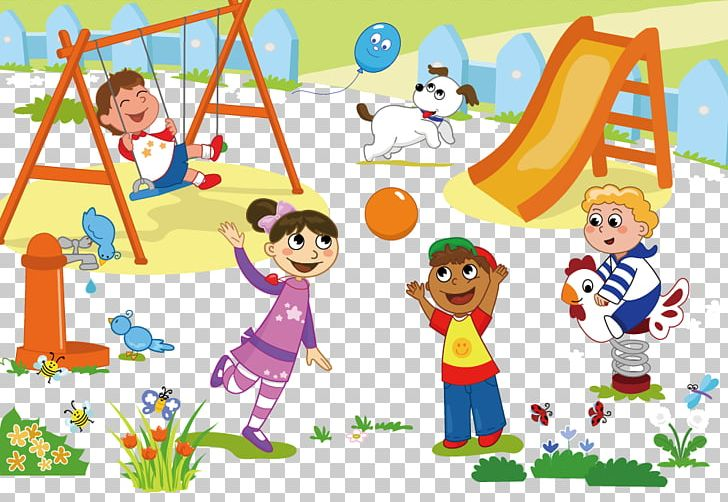
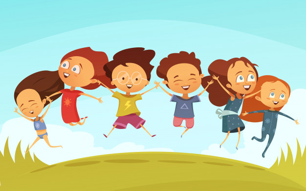

Having a great childhood is incomparable to anything, that's the time you built your memories to remember lifetime: The friends you used to play with, the friends who taught you how to play a certain games, the friends who fought back for you because there were someone who's poking you, the friends who came to your childhood birthdays. And most importantly the friends who were by your side of being a child. Those are the best of the best you could have as a child. Reminiscing my childhood years is treasure for me, I will never forget the people that were part of it. Especially my friends I used to play with, but sadly, we were no longer connected to each other. However. our memories from each will alaways live in me.
I remember the time when I was just a 7 year old kid, my father gave me a birthday present which I really loved. And then I realized, that's the most memorable and expensive gift I got when I was a kid compared to my childhood birthdays. As I remember, it was a car themed toy and and have its own track to play with. I really felt the joy I had back then. Oh, and I remember that time when my father was about to leave because he used to be a manager of Jollibee. Everytime he's about to leave, I always chase him until he got into a vehicle. I always cry and crumble that time because my father spoils me that much and he was so caring about how I feel and what am I thinking. He alaways asks me; "Ano iniisip mo nak?", "May gusto ka kainin nak?", those words are the most caring times I always hear from my father.
 But of course, what about my mother, right? As many as I remember about being a mommy's boy, because my father was almost all day at his work. My mother was the one who took care of me the most. If I could recall my memories through the years of my childhood, my mother is more dominant in terms of being strict compared to my father. She always make sure I always study back then, if I don't ready at least 1 page of the reading book, she won't let me go outside to play. I admit that I was a "batang kalye" before, I used to play "pogs", "text", "jolen" and more of the those filipino "kalye" games. I also remember that time when I was reading, my mother were beside me. Because everytime I read something wrong or always say the wrong word time to time, she slaps my finger using a ruler. I cry almost everyday in my childhood years, but to be honest, that was the reason I learned to read and I'm thankful for that. My mother might be strict, but she knows that what she did on my childhood years, that's what the best she could do to me.
 When I say about about my childhood friends, they are the best friends I could ever have to my childhood. I never experince getting bullied, those chrildren that time were so kindest compared to these kids nowadays. I remember the time when my uncle gave me a bike, I still don't know how to balance out my body at that time. Until such time, with the help of my friends back then, they support each side of the bicycle for me to balance it and familiarized the pedals. And they were a huge part of it why I know how to ride a bicycle. Aside from your parents teaching you what is wrong and right to do, childhood friends are there to teach you how to be a child and be one of them. It was a really overwhelming to have that kind of those friends around you as child. And it gets me upset because when I see a group of children, instead of them playing like we used before, almost all of them are just holding their mobile phones compared to what we used before. I know that it is inevitable, but I totally see what changes have been. I'm not complaining about it, besides, they may have their own way of experiences of their childhood. 35